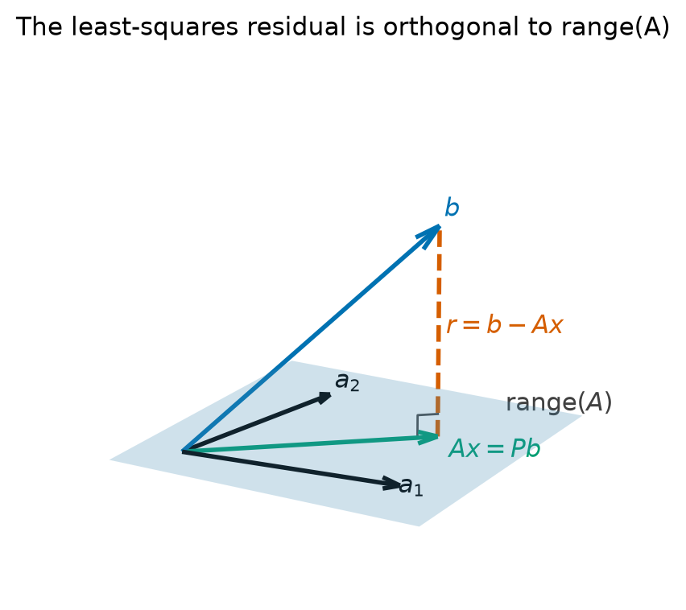
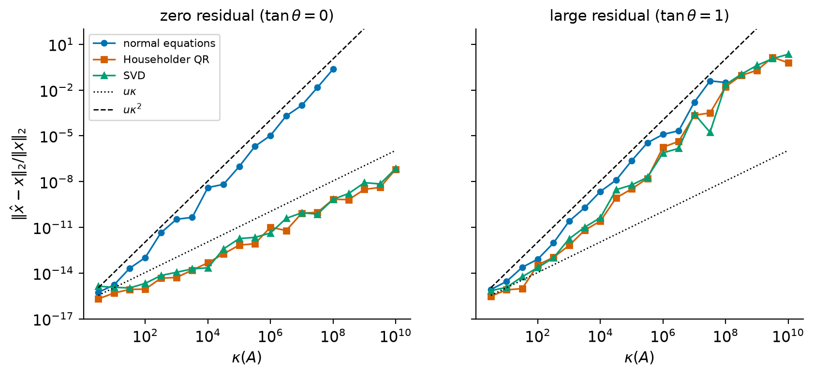
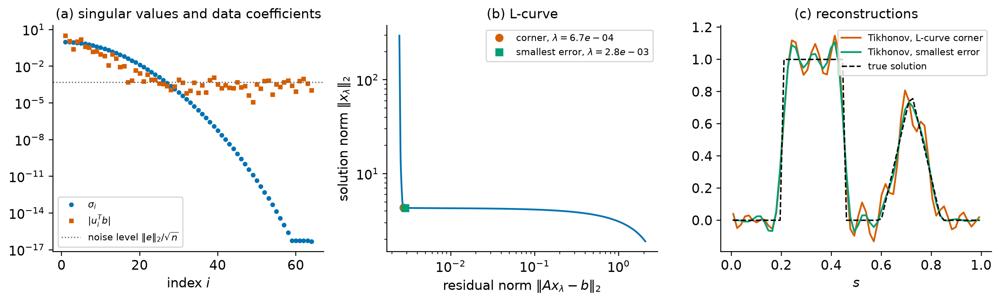
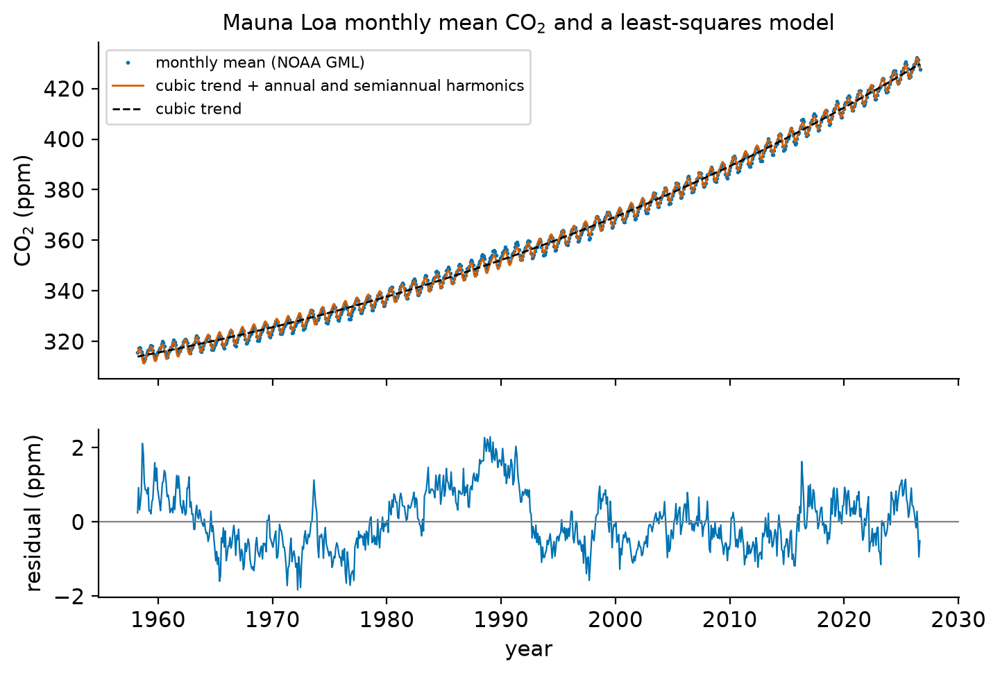

8. Linear least-squares problems#
A linear system \(Ax = b\) with more equations than unknowns usually has no solution. This is the normal situation in data fitting: we measure \(m\) quantities, we believe that they depend linearly on \(n\ll m\) parameters, and the measurements are contaminated by errors, so no choice of the parameters reproduces them exactly. The method of least squares chooses the parameters that make the residual \(b - Ax\) as small as possible in the Euclidean norm. It is the most widely used way of fitting models to data, and it appears inside many other algorithms, from Gauss–Newton iterations for nonlinear fitting to the Krylov subspace methods of Chapter 11.
This chapter brings together three earlier threads. The QR factorization of Chapter 7 gives the standard algorithm. The singular value decomposition and the pseudoinverse of Chapter 2 describe the solution completely, including the rank-deficient case. The notions of conditioning and backward stability from Chapter 4 explain why the classical method of the normal equations, which is correct in exact arithmetic and cheaper, can lose twice as many digits as necessary, and why this matters only for some problems. A striking feature of least squares is that its condition number depends not only on \(\kappa(A)\) but also on how well the model fits the data: when the residual is large, \(\kappa(A)^2\) enters even for the best algorithms.
Learning objectives
After working through this chapter you should be able to:
characterize least-squares solutions geometrically (orthogonal projection) and algebraically (normal equations), and prove existence, and uniqueness exactly when \(A\) has full column rank;
solve least-squares problems by the normal equations with Cholesky, by Householder QR and by the SVD, and state the cost of each;
state and interpret the condition numbers of the least-squares problem, and explain when \(\kappa(A)^2\) governs the sensitivity of the solution;
distinguish the sensitivity of the problem from the rounding errors of an algorithm, and compare the accuracy of the three methods (and of modified Gram–Schmidt) correctly;
compute minimum-norm solutions of rank-deficient problems and make numerical rank decisions with the truncated SVD or column-pivoted QR;
regularize ill-posed problems by Tikhonov regularization, interpret it through filter factors, compute it stably, and choose the parameter with the L-curve;
apply all of this to a real data set, including the centering and scaling of the variables.
8.1. The least-squares problem and its geometry#
8.1.1. Formulation#
Suppose we want to fit a straight line \(f(t) = x_1 + x_2t\) to data \((t_i, b_i)\), \(i = 1,\dots,m\). Each data point gives one equation \(x_1 + x_2t_i = b_i\), and in matrix form
More generally, a model \(f(t) = \sum_{j=1}^n x_j\phi_j(t)\) that is linear in its parameters leads to a matrix \(A\) with entries \(a_{ij} = \phi_j(t_i)\). For polynomials \(\phi_j(t) = t^{j-1}\) this is a Vandermonde matrix; in the case study of this chapter the basis also contains sines and cosines.
Definition 8.1 (Linear least-squares problem)
Given \(A\in\R^{m\times n}\) and \(b\in\R^m\), the linear least-squares problem is to find \(x\in\R^n\) that minimizes \(\|b - Ax\|_2\). A minimizer is called a least-squares solution, and \(r = b - Ax\) is its residual. The problem is overdetermined when \(m>n\).
Minimizing \(\|b-Ax\|_2\) and \(\|b-Ax\|_2^2\) is the same thing; the square is a smooth quadratic function of \(x\), which is why the 2-norm leads to linear equations. (Minimizing the 1- or \(\infty\)-norm of the residual leads to linear programming problems instead.) When the errors in \(b\) are independent and normally distributed with equal variances, the least-squares solution is also the maximum-likelihood estimate of the parameters [Björck, 1996].
8.1.2. Characterization: projection and normal equations#
The picture to keep in mind is Figure 8.1. As \(x\) ranges over \(\R^n\), \(Ax\) ranges over the subspace \(\range(A)\). The closest point of \(\range(A)\) to \(b\) is the orthogonal projection of \(b\), and the residual is then orthogonal to the subspace.


Figure 8.1 Geometry of least squares. The solution \(x\) makes \(Ax\) the orthogonal projection \(Pb\) of \(b\) onto \(\range(A)\), and the residual \(r = b - Ax\) is orthogonal to every column of \(A\).#
Theorem 8.1 (Characterization of least-squares solutions)
Let \(A\in\R^{m\times n}\) and \(b\in\R^m\), and let \(P\) be the orthogonal projector onto \(\range(A)\). For \(x\in\R^n\) the following are equivalent:
\(x\) is a least-squares solution;
the residual is orthogonal to the range of \(A\): \(A^T(b - Ax) = 0\), that is, \(x\) solves the normal equations
(8.1)#\[ A^TAx = A^Tb ; \]\(Ax = Pb\).
Proof. Let \(r = b - Ax\). For every \(z\in\R^n\),
(1)\(\Leftrightarrow\)(2). If \(A^Tr = 0\), the right-hand side is \(\|r\|_2^2 + \|Az\|_2^2\ge\|r\|_2^2\) for every \(z\), so \(x\) is a minimizer. If \(A^Tr\ne0\), take \(z = tA^Tr\) with \(t>0\): the right-hand side is \(\|r\|_2^2 - 2t\|A^Tr\|_2^2 + t^2\|AA^Tr\|_2^2\), which is smaller than \(\|r\|_2^2\) for small \(t\), so \(x\) is not a minimizer.
(2)\(\Leftrightarrow\)(3). Every \(b\) decomposes uniquely as \(b = y + w\) with \(y\in\range(A)\) and \(w\in\range(A)^\perp = \nullsp(A^T)\), and \(y = Pb\) (Chapter 7). Condition (2) says that \(b = Ax + (b - Ax)\) is such a decomposition, and by uniqueness this holds exactly when \(Ax = Pb\).
Theorem 8.2 (Existence and uniqueness)
For every \(A\in\R^{m\times n}\) and \(b\in\R^m\) the least-squares problem has a solution. If \(x_0\) is one solution, the set of all solutions is \(x_0 + \nullsp(A)\), and all solutions have the same residual \(b - Pb\). The solution is unique if and only if \(A\) has full column rank, \(\rank(A) = n\); in that case \(A^TA\) is symmetric positive definite and
Proof. Since \(Pb\in\range(A)\), there is an \(x_0\) with \(Ax_0 = Pb\), and \(x_0\) is a solution by Theorem 8.1. Another vector \(x\) is a solution if and only if \(Ax = Pb = Ax_0\), that is, \(x - x_0\in\nullsp(A)\); the residual of every solution is \(b - Pb\). The solution set is a single point exactly when \(\nullsp(A) = \{0\}\), which means \(\rank(A) = n\). Finally, \(A^TA\) is symmetric, and \(z^TA^TAz = \|Az\|_2^2 > 0\) for \(z\ne0\) when \(\nullsp(A) = \{0\}\), so \(A^TA\) is positive definite and (8.1) has the unique solution (8.2).
Full column rank requires \(m\ge n\). In (8.2) we recognize the pseudoinverse of a matrix of full column rank, \(A^+ = (A^TA)^{-1}A^T\) (Chapter 2), so \(x = A^+b\), and the projector is \(P = AA^+ = A(A^TA)^{-1}A^T\). Formula (8.2) is a statement about the solution, not a recommendation for computing it.
Because \(Pb\perp b - Pb\), the Pythagorean theorem gives
This suggests measuring the quality of the fit by the angle \(\theta\) between \(b\) and \(\range(A)\), defined by \(\cos\theta = \|Ax\|_2/\|b\|_2\) with \(0\le\theta\le\pi/2\). A small \(\theta\) means a small residual; \(\theta = 0\) means \(b\in\range(A)\), so that \(Ax = b\) is consistent; \(\theta = \pi/2\) means \(b\perp\range(A)\) and \(x = 0\). The angle will appear in the condition number of the problem in Section 8.3.
Example 8.1 (Fitting a line to three points)
Fit \(f(t) = x_1 + x_2t\) to the data \((0,1)\), \((1,2)\), \((2,4)\). Then
The determinant of \(A^TA\) is \(6\), and
As Theorem 8.1 predicts, \(A^Tr = (1/6 - 1/3 + 1/6,\; -1/3 + 2/6)^T = 0\). The minimal residual norm is \(\|r\|_2 = \sqrt{6/36} = 1/\sqrt6\approx0.408\), and (8.3) checks: \(\|b\|_2^2 = 21\), \(\|Ax\|_2^2 = 21 - 1/6 = 125/6\).
Check your understanding
The data of Example 8.1 are changed to \(b = (1, 2, 3)^T\). What are the least-squares solution and the residual, and what is \(\theta\)?
Answer. Now \(b = A(1,1)^T\) lies in \(\range(A)\), so \(x = (1,1)^T\) solves \(Ax = b\) exactly, \(r = 0\) and \(\theta = 0\). A least-squares solver applied to a consistent overdetermined system returns its exact solution.
8.2. Three algorithms#
We now assume that \(A\in\R^{m\times n}\) has full column rank, so the solution is unique, and describe the three standard algorithms. Their costs are compared in the table at the end of the section.
8.2.1. The normal equations and Cholesky#
By Theorem 8.2, \(A^TA\) is symmetric positive definite, so (8.1) can be solved by the Cholesky factorization of Chapter 6.
Algorithm 8.1 (Least squares by the normal equations)
Input: \(A\in\R^{m\times n}\) of full column rank, \(b\in\R^m\).
Output: the least-squares solution \(x\).
Form \(C = A^TA\) (only the lower triangle) and \(c = A^Tb\).
Compute the Cholesky factorization \(C = LL^T\).
Solve \(Ly = c\) by forward substitution and \(L^Tx = y\) by back substitution.
Cost. The lower triangle of \(C\) consists of \(n(n+1)/2\) inner products of length \(m\), about \(mn^2\) flops. Forming \(c\) costs \(2mn\) flops, Cholesky \(n^3/3\) and the two triangular solves \(2n^2\). The total is
The method is simple, fast, and uses only the \(n\times n\) matrix \(C\), which can be accumulated row by row if \(A\) is too large to store. Its weakness is that \(\kappa_2(A^TA) = \kappa_2(A)^2\) (Exercise 8.3): the matrix actually factored is much worse conditioned than \(A\). We will see in Section 8.4 exactly when this matters.
8.2.2. Householder QR#
Let \(A = QR\) be a full QR factorization (Chapter 7), with \(Q\in\R^{m\times m}\) orthogonal and \(R = \begin{bmatrix}R_1\\0\end{bmatrix}\), where \(R_1\in\R^{n\times n}\) is upper triangular and nonsingular because \(A\) has full column rank. Since multiplication by \(Q^T\) preserves the 2-norm, with \(Q^Tb = \begin{bmatrix}c_1\\c_2\end{bmatrix}\) (\(c_1\in\R^n\)),
The second term does not depend on \(x\), and the first vanishes for \(x = R_1^{-1}c_1\). So the solution is obtained from one triangular solve, and the minimal residual norm \(\|c_2\|_2\) comes for free. Only \(Q^Tb\) is needed, never \(Q\) itself.
Algorithm 8.2 (Least squares by Householder QR)
Input: \(A\in\R^{m\times n}\) of full column rank, \(b\in\R^m\).
Output: the least-squares solution \(x\) and the residual norm \(\rho\).
For \(k = 1,\dots,n\):
compute the Householder reflector \(H_k\) that zeros the entries \(k+1,\dots,m\) of column \(k\) of the current \(A\);
apply it to the remaining columns of \(A\) and to \(b\): \(A\leftarrow H_kA\), \(b\leftarrow H_kb\).
Now \(A\) holds \(R\) and \(b\) holds \(c = Q^Tb = H_n\cdots H_1b\).
Solve \(R_1x = c_{1:n}\) by back substitution; \(\rho = \|c_{n+1:m}\|_2\).
Cost. The Householder QR factorization costs \(2mn^2 - \tfrac23n^3\) flops (Chapter 7). Applying the reflectors to \(b\) costs \(\bigO(mn)\) and the back substitution \(n^2\), so the total is
roughly twice the cost of the normal equations when \(m\gg n\) and the same
when \(m = n\) (Exercise 8.4). Forming \(Q\) explicitly (as
numpy.linalg.qr does) costs extra \(\bigO(mn^2)\) flops and is unnecessary;
numpy.linalg.lstsq and scipy.linalg.lstsq use LAPACK drivers based on the
SVD or on a complete orthogonal factorization instead.
The same derivation works for any QR factorization, in particular for the thin factorization \(A = Q_1R_1\) produced by Gram–Schmidt: then \(x = R_1^{-1}Q_1^Tb\). Mathematically this is identical; numerically it depends on how \(Q_1^Tb\) is computed, as we will see in Section 8.4.
8.2.3. The singular value decomposition#
Let \(A = U\Sigma V^T = \sum_{i=1}^n\sigma_iu_iv_i^T\) be a thin SVD (Chapter 2) with \(\sigma_1\ge\dots\ge\sigma_n>0\). Since \(\|b - Ax\|_2^2 = \|U^Tb - \Sigma V^Tx\|_2^2 + \|(I - UU^T)b\|_2^2\), the solution is
Computing the SVD is more expensive than a QR factorization. A typical estimate for the whole algorithm is about \(2mn^2 + 11n^3\) flops [Trefethen and Bau, 1997] (Lecture 11): comparable to QR when \(m\gg n\), but considerably more when \(m\approx n\). What the SVD buys is information. The expansion (8.7) shows how each component of the data is amplified by \(1/\sigma_i\), and it extends directly to rank-deficient and ill-posed problems (Section 8.5 and Section 8.6).
Method |
Flops (leading terms) |
Rank-deficient \(A\) |
Accuracy (see Section 8.4) |
|---|---|---|---|
Normal equations + Cholesky |
\(mn^2 + n^3/3\) |
fails |
error about \(\kappa^2u\) |
Householder QR |
\(2mn^2 - 2n^3/3\) |
needs column pivoting |
backward stable |
SVD |
about \(2mn^2 + 11n^3\) |
yes (truncate) |
backward stable |
Example 8.2 (The line fit by QR)
For Example 8.1, Gram–Schmidt on the columns of \(A\) gives \(q_1 = (1,1,1)^T/\sqrt3\), \(r_{11} = \sqrt3\), \(r_{12} = q_1^Ta_2 = \sqrt3\), \(a_2 - r_{12}q_1 = (-1,0,1)^T\), \(r_{22} = \sqrt2\) and \(q_2 = (-1,0,1)^T/\sqrt2\). Then \(Q_1^Tb = (7/\sqrt3,\ 3/\sqrt2)^T\), and the triangular system
gives \(x_2 = 3/2\) and \(x_1 = 7/3 - 3/2 = 5/6\), as before. The residual norm is \(\sqrt{\|b\|_2^2 - \|Q_1^Tb\|_2^2} = \sqrt{21 - 49/3 - 9/2} = 1/\sqrt6\).
8.3. Sensitivity of least-squares problems#
Before comparing algorithms we must know how much the exact solution itself changes when the data \(A\) and \(b\) change. This is a property of the problem alone (Chapter 4). For a square nonsingular system the answer is \(\kappa(A)\). For least squares, three quantities are involved. Let \(A\) have full column rank, let \(x = A^+b\) and \(y = Ax = Pb\), and define
The angle \(\theta\in[0,\pi/2]\) measures the size of the residual (\(\|r\|_2 = \|b\|_2\sin\theta = \|y\|_2\tan\theta\)), and \(\eta\) satisfies \(1\le\eta\le\kappa\), because \(\|y\|_2 = \|Ax\|_2\le\|A\|_2\|x\|_2\) and \(\|x\|_2 = \|A^+y\|_2\le\|A^+\|_2\|y\|_2\). The value of \(\eta\) depends on how \(x\) is oriented relative to the right singular vectors: \(\eta = 1\) when \(x\) is parallel to \(v_1\) and \(\eta = \kappa\) when it is parallel to \(v_n\) (Exercise 8.7).
We use relative normwise condition numbers in the 2-norm, as in Chapter 4: for perturbations of \(b\), for example, \(\kappa_b = \lim_{\epsilon\to0}\sup_{\|\delta b\|_2\le\epsilon\|b\|_2} \big(\|\delta x\|_2/\|x\|_2\big)/\epsilon\).
Theorem 8.3 (Condition numbers of the least-squares problem)
Let \(A\in\R^{m\times n}\) have full column rank, let \(b\in\R^m\) with \(\theta<\pi/2\), and let \(\kappa\), \(\theta\) and \(\eta\) be defined by (8.8). The relative condition numbers of the least-squares solution \(x\) with respect to perturbations of \(b\) and of \(A\) are
The first is an equality, the second an upper bound [Trefethen and Bau, 1997] (Theorem 18.1). Moreover \(\kappa_A\ge\max\{\kappa,\ \kappa^2\tan\theta/\eta\}\), so the bound is sharp to within a factor \(2\).
Proof. Perturbations of \(b\). Since \(x = A^+b\) is linear in \(b\), a perturbation \(\delta b\) changes \(x\) by exactly \(\delta x = A^+\delta b\), and \(\sup_{\delta b\ne0}\|A^+\delta b\|_2/\|\delta b\|_2 = \|A^+\|_2 = 1/\sigma_n\), attained for \(\delta b\) parallel to \(u_n\). Hence
Perturbations of \(A\), upper bound. For \(\|\delta A\|_2<\sigma_n\) the matrix \(A+\delta A\) has full column rank and the solution \(x(A) = (A^TA)^{-1}A^Tb\) is a differentiable function of \(A\). Using \(\delta\big[(A^TA)^{-1}\big] = -(A^TA)^{-1}(\delta A^TA + A^T\delta A)(A^TA)^{-1} + \bigO(\|\delta A\|^2)\) and \(r = b - Ax\), the first-order change is
Since \(\|(A^TA)^{-1}\|_2 = 1/\sigma_n^2\) and \(\|A^+\|_2 = 1/\sigma_n\),
because \(\|r\|_2/(\|A\|_2\|x\|_2) = \|y\|_2\tan\theta/(\eta\|y\|_2)\).
Lower bounds. Let \(\epsilon>0\). The perturbation \(\delta A = \epsilon\|A\|_2\,u_nx^T/\|x\|_2\) has \(\|\delta A\|_2 = \epsilon\|A\|_2\) and \(\delta A^Tr = 0\) (because \(u_n\in\range(A)\perp r\)), so (8.10) gives \(\delta x = -\epsilon\|A\|_2\|x\|_2\,v_n/\sigma_n\) and \(\|\delta x\|_2/\|x\|_2 = \epsilon\kappa\). The perturbation \(\delta A = \epsilon\|A\|_2\,rv_n^T/\|r\|_2\) (for \(r\ne0\)) has \(A^+\delta A = 0\) (because \(A^+r = (A^TA)^{-1}A^Tr = 0\)) and \(\delta A^Tr = \epsilon\|A\|_2\|r\|_2v_n\), so \(\delta x = \epsilon\|A\|_2\|r\|_2v_n/\sigma_n^2\) and \(\|\delta x\|_2/\|x\|_2 = \epsilon\kappa^2\tan\theta/\eta\).
The same theorem gives the conditioning of the fitted values \(y = Ax\): with respect to \(b\) it is \(1/\cos\theta\) (Exercise 8.6), and with respect to \(A\) it is at most \(\kappa/\cos\theta\) [Trefethen and Bau, 1997] (Theorem 18.1). Perturbation bounds that hold for finite (not only infinitesimal) perturbations, and for the pseudoinverse in general, go back to Wedin [1973]; see also Higham [2002] (Chapter 20).
Interpretation. Three regimes follow from (8.9).
Consistent or small-residual problems (\(\tan\theta\ll1/\kappa\), say). Then \(\kappa_A\approx\kappa\) and \(\kappa_b\le\kappa/\cos\theta\approx\kappa\): the problem behaves like a square linear system with condition number \(\kappa\).
Large-residual problems (\(\tan\theta\) of order one). If \(\eta\) is modest, which is typical, \(\kappa_A\) is of order \(\kappa^2\). The square of the condition number is then an intrinsic property of the problem, not an artifact of an algorithm.
\(x\) aligned with \(v_n\) (\(\eta\approx\kappa\)). Then even the large-residual term reduces to \(\kappa\tan\theta\).
The dependence on \(\theta\) is the essential new feature. Fitting a model that describes the data well is a better-conditioned problem than fitting one that does not.
Warning
The sensitivity of the exact solution to a perturbation \(\delta b\) or \(\delta A\) is a property of the problem, and it is the same whatever algorithm is used afterwards. An earlier version of these notes claimed that a perturbation \(\delta b\) with \(\|\delta b\|_2/\|b\|_2 = 10^{-10}\) changes the solution by a relative amount \(\kappa^2\cdot10^{-10}\) “via the normal equations” and \(\kappa\cdot10^{-10}\) “via QR”. That is wrong: the exact solutions of the two perturbed problems coincide, and both move by at most \(\kappa_b\cdot10^{-10}\). What differs between the methods is the additional error caused by rounding during the computation, which is the subject of the next section.
8.4. Rounding errors and the stability of the three methods#
Recall that \(u = 2^{-53}\approx1.11\times10^{-16}\) is the unit roundoff and that an algorithm is backward stable if its computed result is the exact result for slightly perturbed data (Chapter 4). Trefethen and Bau [1997] call \(u\) “\(\epsilon_{\text{machine}}\)”; we translate their results to \(u\).
8.4.1. Householder QR is backward stable#
Theorem 8.4 (Backward stability of Householder least squares)
Let \(A\in\R^{m\times n}\), \(m\ge n\), have full rank, and suppose the least-squares problem is solved by Householder QR as in Algorithm 8.2, with the reflectors applied to \(b\). The computed solution \(\hat x\) is the exact least-squares solution of
where \(\tilde\gamma_{mn} = cmnu/(1 - cmnu)\) with a small integer constant \(c\) [Higham, 2002] (Theorem 20.3).
The backward error is small column by column, which is stronger than a normwise statement. Combining the theorem with Theorem 8.3 (and \(\|\Delta A\|_2\le\sqrt n\max_j\|\Delta a_j\|_2\le\sqrt n\,\tilde\gamma_{mn}\|A\|_2\)), the forward error satisfies, to first order,
with a modest factor \(c(m,n)\). This is the best we can expect of any algorithm, since rounding the data alone perturbs them by a relative amount \(u\). The least-squares solver based on the SVD is backward stable as well [Trefethen and Bau, 1997] (Lecture 19).
Because the Householder \(Q\) is orthogonal to working accuracy, forming the
thin \(Q\) explicitly and computing \(Q^Tb\) from it (as is done when one writes
Q, R = numpy.linalg.qr(A)) also gives errors of the size
(8.11) in practice, as the lab confirms; it only costs more.
8.4.2. The normal equations are not backward stable#
The normal equations lose information in the very first step. Forming \(C = \fl(A^TA)\) commits errors \(|\fl(A^TA) - A^TA|\le\gamma_m|A^T||A|\) (the bound for matrix products from Chapter 3). In the 2-norm this is an error of order \(mnu\|A\|_2^2 = mnu\|A^TA\|_2\), a perturbation of \(C\) that is small relative to \(C\) but that need not correspond to any small perturbation of \(A\).
Sketch of the forward error. Even if everything after forming \(C\) and \(c = \fl(A^Tb)\) were exact, the perturbation \(E = \fl(A^TA) - A^TA\) changes the solution by about \(C^{-1}Ex\), which is bounded by \(\kappa_2(A^TA)\,\|E\|_2/\|C\|_2\,\|x\|_2\approx c(m,n)u\kappa^2\|x\|_2\); the error in \(c\) and the backward error of Cholesky contribute terms of the same kind. The result is a forward error of order
whatever the size of the residual. When \(\kappa^2u\) approaches one, that is, \(\kappa\gtrsim u^{-1/2}\approx10^8\), the computed \(\fl(A^TA)\) may not even be positive definite, and Cholesky may break down (Exercise 8.5).
Comparing (8.11) with (8.12) gives the precise comparison of the two methods:
for small residuals, QR gives an error of order \(\kappa u\) and the normal equations of order \(\kappa^2u\): the normal equations lose twice as many digits as the problem requires;
for large residuals with modest \(\eta\), both errors are of order \(\kappa^2u\), because the problem itself has condition number of order \(\kappa^2\). The normal equations are then no less accurate than QR.
In the language of Trefethen and Bau [1997] (Lecture 19), the normal equations are unstable in general, but stable for a class of problems in which \(\kappa\) is bounded or \(\tan\theta/\eta\) is bounded below. They remain a good choice when \(A\) is well conditioned, or when speed and memory matter more than the last digits, and they are often used with a posteriori checks.
Figure 8.2 shows the forward errors of the three methods for test matrices with prescribed \(\kappa\) and residual size. Each computed solution is compared with the exact least-squares solution of the stored floating-point data, computed in rational arithmetic, so that the plotted quantity is the effect of rounding in the algorithm and nothing else.


Figure 8.2 Relative forward errors of the normal equations (with Cholesky), Householder QR and the SVD, for \(40\times8\) matrices with prescribed \(\kappa(A)\) (median of three random problems), measured against the exact least-squares solution. Left: \(b = Ax\) (zero residual). Right: \(\|r\|_2 = \|Ax\|_2\) (\(\theta = 45^\circ\)). Missing points on the left mean that Cholesky of the computed \(A^TA\) failed.#
Warning
To measure the error of a least-squares algorithm, compare with the exact least-squares solution of the same data, not with the vector \(x_{\rm gen}\) that was used to generate noisy data \(b = Ax_{\rm gen} + e\). The difference \(A^+e\) between the least-squares solution and \(x_{\rm gen}\) is a statistical error of the model that no algorithm can remove, and it can hide the rounding errors completely. An earlier version of these notes compared the normal equations and QR for \(m = 40\), \(n = 8\), \(\kappa = 10^7\) and noise of size \(10^{-8}\) in this way and found “no difference”. In one repetition of that experiment with our own random data, both methods are about \(2\times10^{-2}\) away from \(x_{\rm gen}\) (in the relative sense), while their relative errors with respect to the exact least-squares solution are about \(2\times10^{-4}\) for the normal equations and \(2\times10^{-11}\) for Householder QR. The lab repeats the experiment with other random data.
8.4.3. Gram–Schmidt and the right-hand side#
Modified Gram–Schmidt (MGS) computes a thin factorization \(A\approx\hat Q_1\hat R_1\) in \(2mn^2\) flops, but the computed \(\hat Q_1\) loses orthogonality in proportion to \(\kappa u\) (Chapter 7). If we form \(\hat Q_1^Tb\) from this matrix, the error in the solution can be of order \(\kappa^2u\) even for a zero residual, as bad as the normal equations. The remedy is not to abandon MGS but to treat \(b\) as an extra column: run MGS on the augmented matrix \([A,\ b]\),
and solve \(R_1x = z\); then \(\rho = \|b - Ax\|_2\) in exact arithmetic. The vector \(z\) is computed by the same sequence of projections as the columns of \(R_1\), \(z_k = q_k^Tb^{(k)}\) with \(b^{(k+1)} = b^{(k)} - z_kq_k\), rather than from inner products with the original \(b\). This algorithm is backward stable: Björck [1967] analyzed it, and Björck and Paige [1992] showed that MGS is numerically equivalent to Householder QR applied to \(A\) with \(n\) rows of zeros placed on top, from which the backward stability of MGS least squares follows (see also Higham [2002], Chapter 20, and Trefethen and Bau [1997], Lecture 19). The lab confirms that its errors are of the same size as those of Householder QR.
Warning
It is not true that MGS least squares “may be far from optimal” whereas Householder QR is safe. What is unsafe is the combination of MGS with an explicit product \(\hat Q_1^Tb\). MGS applied to \([A,\ b]\) is backward stable; the loss of orthogonality of \(\hat Q_1\) does not harm the least-squares solution.
8.4.4. Column scaling#
A remark that is important in applications such as the case study below: scaling the columns of \(A\) changes \(\kappa(A)\) but does not change the problem in any essential way, since \(\min\|b - (AD)z\|_2\) with \(D\) diagonal and nonsingular is solved by \(z = D^{-1}x\).
Remark 8.1 (Householder QR is insensitive to column scaling)
Let \(D\) be diagonal with powers of \(2\) on the diagonal. In the absence of underflow and overflow, multiplication by \(D\) is exact, and one checks step by step that Algorithm 8.2 applied to \(AD\) performs exactly the same rounding errors as when applied to \(A\): the reflectors are the same, the computed \(R\) is multiplied by \(D\), and the computed solution is exactly \(D^{-1}\hat x\). The same holds for the normal equations. Consequently, the accuracy of these methods, measured in the scaled variables, is governed by \(\min_D\kappa(AD)\) rather than by \(\kappa(A)\). This is consistent with the columnwise backward error of Theorem 8.4; see Higham [2002] (Chapters 19 and 20). Algorithms that mix the columns, such as the SVD, and every decision based on the singular values of \(A\) itself, such as numerical rank, are not invariant under column scaling.
Check your understanding
A colleague solves a least-squares problem with \(\kappa(A) = 10^6\) by the normal equations and reports a relative residual \(\|b - A\hat x\|_2/\|b\|_2\) equal to the one obtained by QR to six digits. Does this show that the normal equations gave an accurate \(\hat x\)?
Answer. No. The residual is insensitive to errors in \(x\) along directions that \(A\) shrinks: an error \(\delta x = \epsilon v_n\) changes \(Ax\) by only \(\epsilon\sigma_n\). Equal residuals say that both vectors fit the data equally well, not that they are close to each other or to the exact solution; for a small-residual problem the forward error of the normal equations can still be of order \(\kappa^2u\approx10^{-4}\), compared with \(\kappa u\approx10^{-10}\) for QR.
8.5. Rank-deficient and nearly rank-deficient problems#
8.5.1. The minimum-norm solution#
If \(\rank(A) = r<n\), the solution set \(x_0 + \nullsp(A)\) is an affine subspace (Theorem 8.2), and we must specify which solution we want. The standard choice is the one of smallest norm.
Theorem 8.5 (Minimum-norm least-squares solution)
Let \(A\in\R^{m\times n}\) have rank \(r\ge1\) and SVD \(A = \sum_{i=1}^r\sigma_iu_iv_i^T\) with \(\sigma_1\ge\dots\ge\sigma_r>0\). Then
is a least-squares solution, it is the only least-squares solution that lies in \(\range(A^T) = \nullsp(A)^\perp\), and every other least-squares solution \(x\) satisfies \(\|x\|_2>\|x_+\|_2\).
Proof. We have \(Ax_+ = \sum_{i=1}^ru_iu_i^Tb\). The matrix \(\sum_{i\le r}u_iu_i^T\) is the orthogonal projector onto the range of \(A\), which is \(\Span\{u_1,\dots,u_r\}\), so \(x_+\) is a solution by Theorem 8.1. It lies in \(\Span\{v_1,\dots,v_r\} = \range(A^T)\), which is the orthogonal complement of \(\nullsp(A) = \Span\{v_{r+1},\dots,v_n\}\). Every solution is \(x = x_+ + z\) with \(z\in\nullsp(A)\), and \(\|x\|_2^2 = \|x_+\|_2^2 + \|z\|_2^2\) because \(z\perp x_+\). This exceeds \(\|x_+\|_2^2\) unless \(z = 0\), and a solution in \(\range(A^T)\) must have \(z\in\range(A^T)\cap\nullsp(A) = \{0\}\).
Example 8.3 (A rank-one problem)
Let \(A = \begin{bmatrix}1&1\\1&1\\0&0\end{bmatrix}\) and \(b = (1,3,1)^T\). Here \(A = \sigma_1u_1v_1^T\) with \(\sigma_1 = 2\), \(u_1 = (1,1,0)^T/\sqrt2\) and \(v_1 = (1,1)^T/\sqrt2\). The least-squares solutions are all \(x\) with \(x_1 + x_2 = 2\) (the average of the first two data), that is, \(x = (1,1)^T + t(1,-1)^T\), and the residual is \((-1, 1, 1)^T\) for all of them. The minimum-norm solution is
8.5.2. Numerical rank#
In floating point, exact rank deficiency is almost never observed: the computed singular values of a matrix of rank \(r\) are \(\sigma_{r+1},\dots\) of order \(u\sigma_1\), not zero. Formula (8.13) applied with all \(n\) computed singular values then divides rounding noise by numbers of order \(u\sigma_1\) and produces an enormous, meaningless solution; applied to an exactly zero singular value it divides by zero. (The legacy code for this course had exactly this defect.) We must decide which singular values to treat as zero.
Definition 8.2 (Numerical rank)
The numerical rank of \(A\) with respect to a tolerance \(\tau>0\) is the number of singular values of \(A\) that exceed \(\tau\).
The tolerance should reflect the uncertainty in \(A\). If \(A\) is known only to
within perturbations of norm \(\delta\), then by the perturbation bound
\(|\sigma_i(A+E) - \sigma_i(A)|\le\|E\|_2\) (Chapter 2) no
singular value below \(\delta\) can be distinguished from zero, and
\(\tau\approx\delta\) is appropriate. For data that are exact up to rounding,
\(\tau\) is a modest multiple of \(u\sigma_1\). NumPy’s numpy.linalg.lstsq(A, b, rcond=None) treats singular values below \(\max(m,n)\,\epsmach\,\sigma_1\) as
zero, and rcond sets a different relative threshold. A rank decision is
reliable only if there is a clear gap in the singular values around \(\tau\).
Why is such a decision necessary at all? Because the pseudoinverse is not a continuous function of \(A\) when the rank changes.
Proposition 8.1 (Discontinuity of the pseudoinverse)
If \(\rank(A+E)>\rank(A)\), then \(\|(A+E)^+\|_2\ge1/\|E\|_2\).
Proof. Let \(r = \rank(A)\). Then \(\sigma_{r+1}(A) = 0\), so \(\sigma_{r+1}(A+E)\le\|E\|_2\). Since \(\rank(A+E)\ge r+1\), the matrix \(A+E\) has a nonzero singular value \(\sigma_{r+1}(A+E)\le\|E\|_2\), and \(\|(A+E)^+\|_2\) is the reciprocal of the smallest nonzero singular value.
A perturbation of size \(10^{-16}\) that raises the rank can therefore change the minimum-norm solution by a factor of \(10^{16}\). The general perturbation theory of the pseudoinverse, including the fact that it is continuous under perturbations that preserve the rank, is due to Wedin [1973].
8.5.3. Truncated SVD#
Algorithm 8.3 (Truncated SVD solution)
Input: \(A\in\R^{m\times n}\), \(b\in\R^m\), a tolerance \(\tau>0\).
Output: the minimum-norm solution of the problem with numerical rank \(k\).
Compute the thin SVD \(A = U\Sigma V^T\).
Let \(k\) be the number of singular values larger than \(\tau\).
Return \(x_k = \sum_{i=1}^k (u_i^Tb/\sigma_i)\,v_i\).
By the Eckart–Young theorem (Chapter 2), \(A_k = \sum_{i\le k}\sigma_iu_iv_i^T\) is a nearest matrix of rank \(k\) to \(A\), and \(x_k = A_k^+b\) is the minimum-norm solution of the least-squares problem for \(A_k\). Its sensitivity is governed by \(\sigma_1/\sigma_k\) instead of \(\sigma_1/\sigma_n\): truncation trades a small modification of the problem for a large gain in stability.
8.5.4. QR with column pivoting#
The SVD is the most reliable tool for rank decisions, but a cheaper alternative is often adequate. QR with column pivoting computes \(AP = QR\) with a permutation \(P\), where at step \(k\) the column of largest norm in the remaining submatrix is moved to position \(k\). The diagonal of \(R\) then satisfies \(|r_{11}|\ge|r_{22}|\ge\dots\). If after \(k\) steps
we set \(R_{22}\) to zero and declare numerical rank \(k\). Then \(A\) is within
\(\tau\) of a matrix of rank \(k\), and the basic solution
\(x = P\begin{bmatrix}R_{11}^{-1}c_1\\0\end{bmatrix}\) with \(c = Q^Tb\) fits the
data as well as the truncated problem allows. The basic solution has at most
\(k\) nonzero entries but is in general not the minimum-norm solution; a
further orthogonal transformation from the right (a complete orthogonal
decomposition) yields the minimum-norm solution. This is what the LAPACK
driver behind scipy.linalg.lstsq(A, b, lapack_driver="gelsy") does. The pivot
search adds only lower-order work to Householder QR, because the column norms
can be updated rather than recomputed. Column pivoting usually reveals the
numerical rank, but not always; a classical counterexample is due to Kahan
[Golub and Van Loan, 2013] (Chapter 5). The SVD is the tool of choice when the rank
decision really matters.
8.6. Tikhonov regularization#
8.6.1. Discrete ill-posed problems#
Truncation works well when there is a gap in the singular values. Many problems in science and engineering have no gap. They arise from the discretization of integral equations of the first kind, such as deblurring a signal or image, or inferring a source from distant measurements: \(b(s) = \int K(s,t)x(t)\,dt\) with a smooth kernel \(K\). The singular values of the discretized operator decay gradually to the level of rounding errors, and the data are noisy. In the expansion (8.13), the coefficients \(u_i^Tb\) of the exact data decay (for a reasonable solution they must decay faster than \(\sigma_i\)), but the coefficients of the noise do not, so the terms with small \(\sigma_i\) are dominated by amplified noise [Hansen, 1998].
Figure 8.3 shows an example that we construct in the lab: a Gaussian blurring kernel on \([0,1]\) discretized by the midpoint rule with \(n = 64\), a true solution consisting of a box and a triangle, and data with Gaussian noise of relative size \(10^{-3}\). The computed condition number of \(K\) exceeds \(10^{17}\); the matrix is numerically singular. Panel (a) shows that the coefficients \(|u_i^Tb|\) level off at the noise level near \(i = 20\), while \(\sigma_i\) continues to decrease. Solving \(Kx = b\) directly gives a relative error of about \(5\times10^{13}\).
8.6.2. Definition and filter factors#
The idea of regularization is to trade a little residual for a large reduction in the size of the solution.
Theorem 8.6 (Tikhonov regularization)
Let \(A\in\R^{m\times n}\) with thin SVD \(A = \sum_{i=1}^p\sigma_iu_iv_i^T\), \(p = \min(m,n)\), and let \(\lambda>0\). The problem
has the unique solution
As \(\lambda\to0\), \(x_\lambda\to A^+b\). As \(\lambda\) increases, \(\|x_\lambda\|_2\) decreases and \(\|Ax_\lambda - b\|_2\) increases (both weakly).
Proof. The two expressions in (8.14) are equal by the definition of the 2-norm of a stacked vector. The stacked matrix has full column rank because its lower block \(\lambda I\) does, so by Theorem 8.2 the solution is unique and satisfies the normal equations \((A^TA + \lambda^2I)x = A^Tb\). With \(A^TA = \sum_i\sigma_i^2v_iv_i^T\) (completing \(v_1,\dots,v_p\) to an orthonormal basis of \(\R^n\) with eigenvalue \(0\) where needed) and \(A^Tb = \sum_i\sigma_i(u_i^Tb)v_i\), the solution is \(\sum_i\sigma_i(u_i^Tb)/(\sigma_i^2+\lambda^2)\,v_i\), which is (8.15). Each \(f_i\to1\) as \(\lambda\to0\), which gives the limit (8.13). Finally, \(\|x_\lambda\|_2^2 = \sum_i f_i^2(u_i^Tb)^2/\sigma_i^2\) with each \(f_i\) decreasing in \(\lambda\), and \(\|Ax_\lambda - b\|_2^2 = \sum_i(1 - f_i)^2(u_i^Tb)^2 + \|b - \sum_iu_iu_i^Tb\|_2^2\) with each \(1 - f_i = \lambda^2/(\sigma_i^2+\lambda^2)\) increasing.
The filter factors \(f_i\) are close to \(1\) for \(\sigma_i\gg\lambda\) and close to \(\sigma_i^2/\lambda^2\) for \(\sigma_i\ll\lambda\). Tikhonov regularization thus keeps the components with large singular values, damps those with small ones, and makes a smooth transition near \(\sigma_i\approx\lambda\), whereas the truncated SVD uses the filter factors \(1\) and \(0\). In statistics the same method is called ridge regression [Golub and Van Loan, 2013] (Section 6.1).
Computing \(x_\lambda\) stably. The second form of (8.14) is an ordinary least-squares problem with the \((m+n)\times n\) matrix \(\begin{bmatrix}A\\\lambda I\end{bmatrix}\), whose condition number is \(\sqrt{(\sigma_1^2+\lambda^2)/(\sigma_n^2+\lambda^2)}\le\sqrt{\sigma_1^2+\lambda^2}/\lambda\). Solving it by Householder QR is backward stable and costs about \(2(m+n)n^2 - \tfrac23n^3\) flops. The regularized normal equations \((A^TA+\lambda^2I)x = A^Tb\) are faster but square this condition number and suffer from the rounding error in forming \(A^TA\). When \(x_\lambda\) is needed for many values of \(\lambda\), it is most economical to compute the SVD (or a bidiagonalization) once and evaluate (8.15).
8.6.3. Choosing the regularization parameter#
The parameter \(\lambda\) balances two errors: too small, and noise is amplified; too large, and the solution is oversmoothed. Two classical rules are the following [Hansen, 1998].
The discrepancy principle: if the norm \(\|e\|_2\) of the noise is known, choose \(\lambda\) so that \(\|Ax_\lambda - b\|_2\approx\|e\|_2\). There is no point in fitting the data more closely than their errors.
The L-curve [Hansen, 1992]: plot \(\|x_\lambda\|_2\) against \(\|Ax_\lambda - b\|_2\) on log-log axes. The curve typically has the shape of an L. On the vertical branch (small \(\lambda\)) the solution norm explodes while the residual barely decreases; on the horizontal branch (large \(\lambda\)) the residual grows while the solution norm barely decreases. The corner, located for example as the point of maximum curvature, is a compromise that does not require knowledge of the noise level.
For the example of Figure 8.3, the corner of the L-curve is at \(\lambda\approx6.7\times10^{-4}\), where the relative error of \(x_\lambda\) is about \(20\%\). The best value on our grid, which can be found only because we know the true solution, is \(\lambda\approx2.8\times10^{-3}\) with an error of about \(16\%\). The discrepancy principle gives \(\lambda\approx1.1\times10^{-2}\) and an error of about \(18\%\). None of the rules is guaranteed to work; they are heuristics whose failures are well documented [Hansen, 1998], and the error that remains reflects the information destroyed by the blurring, not a defect of the rules.


Figure 8.3 Tikhonov regularization of a discretized Gaussian blurring problem (\(n = 64\), noise of relative size \(10^{-3}\)). (a) Singular values and the coefficients \(|u_i^Tb|\) of the noisy data. (b) The L-curve for \(10^{-6}\le\lambda\le1\), with its corner (maximum curvature) and the value of \(\lambda\) with the smallest error. (c) The corresponding reconstructions and the true solution.#
Warning
Regularization changes the problem. The regularized solution is a biased estimate: it is not the least-squares solution of the original data, and its error cannot be made arbitrarily small by computing more accurately. Regularization is appropriate when the unregularized problem is so ill-conditioned that its solution is dominated by noise, not as a cure for an unstable algorithm applied to a well-conditioned problem.
8.7. Weighted least squares and large problems#
Weighted least squares. If the data have different accuracies, it is natural to give accurate data more weight. With weights \(w_i>0\) and \(W = \diag(w_1,\dots,w_m)\) one minimizes
This is the ordinary problem for the scaled data \(W^{1/2}A\) and \(W^{1/2}b\): multiply row \(i\) by \(\sqrt{w_i}\) and use any of the methods above. The normal equations become \(A^TWAx = A^TWb\). When the errors \(e_i\) are independent with variances \(s_i^2\), the choice \(w_i = 1/s_i^2\) gives the best linear unbiased estimator; with a general covariance matrix \(V = LL^T\) one minimizes \(\|L^{-1}(b - Ax)\|_2\) (generalized least squares) [Björck, 1996]. If the weights vary over many orders of magnitude, the scaled matrix can be very ill-conditioned even though the problem is not, and the algorithm must be chosen with care [Björck, 1996].
Large sparse problems. When \(A\) is large and sparse, a QR factorization
or SVD may be too expensive in time or memory. Iterative methods need only
the products \(Av\) and \(A^Tw\). The method LSQR of Paige and Saunders [1982] is based
on the Golub–Kahan bidiagonalization; it is mathematically equivalent to the
conjugate gradient method applied to the normal equations, without ever
forming \(A^TA\), but has better numerical properties. Its convergence depends
on the singular values of \(A\). LSQR is a Krylov subspace method; the
Krylov methods for linear systems (GMRES and conjugate gradients) are studied
in Chapter 11, and LSQR itself is described in
Paige and Saunders [1982]. SciPy provides it as
scipy.sparse.linalg.lsqr, and its argument damp solves the Tikhonov
problem (8.14) with \(\lambda\) equal to damp.
8.8. Case study: the Mauna Loa carbon dioxide record#
The case study notebook fits the monthly mean atmospheric CO\(_2\) concentration measured at Mauna Loa since 1958 [NOAA Global Monitoring Laboratory, 2026] (822 months, March 1958 to August 2026) with the model
where \(t\) is the time in decimal years, \(t_{\rm mid}\) is the midpoint of the record and \(t_{\rm half}\) is half its length, so that \(s\in[-1,1]\). The fit is shown in Figure 8.4. The case study makes three points.
Centering and scaling matter. With the raw variable \(t\) (\(s = t\)), the
columns \(1, t, t^2, t^3\) have norms from about \(29\) to about \(2\times10^{11}\)
and are nearly parallel, because the range of \(t\) is only about \(3.4\%\) of
its mean.
The resulting design matrix has \(\kappa(A)\approx1.0\times10^{16}\). Scaling
the columns to unit norm reduces this only to about \(1.2\times10^{7}\), since
the near collinearity remains; centering alone gives about \(2.3\times10^{4}\);
centering and scaling to \([-1,1]\) give \(\kappa(A)\approx8.2\). With the raw
variable, numpy.linalg.lstsq with its default cutoff decides that \(A\) has
numerical rank \(7\) and returns a fit whose residual norm is \(22.95\) ppm
instead of the optimal \(21.96\) ppm. Householder QR and even the normal
equations do much better on the raw matrix (their fitted values differ from
the reference by about \(5\times10^{-10}\) and \(2\times10^{-3}\) ppm), in
agreement with Remark 8.1. After centering and scaling, the
fitted values of all methods agree to about \(10^{-12}\) ppm, and the
coefficients become interpretable.
The fitted quantities have units and meaning. The annual harmonic has an amplitude of \(2.84\) ppm and the semiannual one \(0.80\) ppm; together they give a seasonal cycle with a peak-to-peak range of about \(6.4\) ppm. The derivative of the cubic trend gives the growth rate, about \(0.91\) ppm/yr in 1960 and \(2.48\) ppm/yr in 2020.
Residuals and extrapolation reveal the limits of the model. The root mean square residual is \(0.77\) ppm, but the residuals are far from independent (their lag-one autocorrelation is \(0.89\)), and they show slow oscillations lasting several years that no low-degree polynomial can follow. A cubic fitted only to the data before 2000 misses the last twelve months of the record by about \(37\) ppm, whereas a quadratic misses by about \(2\) ppm, although the cubic fits the data before 2000 better: goodness of fit inside the data range says little about extrapolation.


Figure 8.4 The Mauna Loa monthly mean CO\(_2\) record [NOAA Global Monitoring Laboratory, 2026] with a least-squares fit of a cubic trend plus annual and semiannual harmonics (top), and the residuals of the fit (bottom).#
8.9. Computational laboratory#
The lab notebook for this chapter implements the normal
equations with Cholesky, Householder QR with \(Q^Tb\) applied implicitly, the
truncated SVD, and modified Gram–Schmidt with and without the augmented
right-hand side, and checks them against numpy.linalg.lstsq. It computes
exact least-squares solutions of floating-point data in rational arithmetic
and uses them to redo the legacy comparison correctly, to reproduce
Figure 8.2, and to verify the condition numbers of
Theorem 8.3 with the perturbations from its proof. It
shows the failure of the normal equations on the Läuchli matrix, the effect
of truncation on rank-deficient problems, the difference between basic and
minimum-norm solutions, and Tikhonov regularization with filter factors and
the L-curve. The case study applies these tools to
the Mauna Loa CO\(_2\) record.
8.10. Summary#
A least-squares solution makes the residual orthogonal to the range of \(A\); it always exists, is unique exactly when \(A\) has full column rank, and in general the minimum-norm solution \(A^+b\) is the natural choice. Householder QR is the standard algorithm: it costs about \(2mn^2 - \tfrac23n^3\) flops and is backward stable. The normal equations cost about half as much for \(m\gg n\) and are accurate to about \(\kappa^2u\), which is as good as QR for large-residual problems but much worse for small-residual ones, because the condition number of the problem is about \(\kappa\) when the residual is small and involves \(\kappa^2\tan\theta/\eta\) when it is not. Modified Gram–Schmidt is backward stable if \(b\) is processed as an extra column. The SVD handles rank deficiency through truncation, and Tikhonov regularization, computed as an augmented least-squares problem, handles ill-posed problems without a gap in the singular values. In applications, centering and scaling the variables is often the single most effective step.
8.11. Further reading#
Trefethen and Bau [1997] give a concise treatment in Lectures 11 (algorithms and costs), 18 (conditioning, including Theorem 8.3) and 19 (stability). Golub and Van Loan [2013] cover the full-rank problem in Section 5.3, column pivoting and complete orthogonal decompositions in Section 5.4, the rank-deficient problem in Section 5.5, and weighting and regularization in Section 6.1. Higham [2002] (Chapter 20) is the reference for rounding error analysis and perturbation theory of least squares, including the Householder and MGS algorithms and the normal equations. Björck [1996] is the standard monograph on least-squares problems, with statistical background in Chapter 1 and the basic numerical methods in Chapter 2. For MGS see Björck [1967] and Björck and Paige [1992]; for perturbation theory of the pseudoinverse, Wedin [1973]. Hansen [1998] treats rank-deficient and discrete ill-posed problems, truncated SVD, Tikhonov regularization and parameter choice, and Hansen [1992] introduced the L-curve analysis. LSQR is described in Paige and Saunders [1982].
8.12. Exercises#
Exercise 8.1 (Theory: the residual is unique)
Show directly from Theorem 8.1, without using the projector, that two least-squares solutions \(x\) and \(x'\) of the same problem have the same residual. Then show that \(\|r\|_2 = 0\) if and only if \(b\in\range(A)\), and that \(\|r\|_2 = \|b\|_2\) if and only if \(A^Tb = 0\).
Exercise 8.2 (Theory: the augmented system)
Show that \(x\) is a least-squares solution with residual \(r\) if and only if
and that this \((m+n)\times(m+n)\) matrix is nonsingular if and only if \(A\) has full column rank. Is it positive definite?
Exercise 8.3 (Theory: the condition number of the normal equations)
Let \(A\in\R^{m\times n}\) have full column rank. Show that \(\kappa_2(A^TA) = \kappa_2(A)^2\), and that \(AA^T\) is singular when \(m>n\).
Solution to Exercise 8.3 (Theory: the condition number of the normal equations)
With a thin SVD \(A = U\Sigma V^T\), \(A^TA = V\Sigma U^TU\Sigma V^T = V\Sigma^2V^T\), which is an eigenvalue decomposition (and an SVD) of the symmetric positive definite matrix \(A^TA\) with eigenvalues \(\sigma_i^2\). Hence \(\kappa_2(A^TA) = \sigma_1^2/\sigma_n^2 = \kappa_2(A)^2\). The matrix \(AA^T\in\R^{m\times m}\) has rank \(n<m\), so it is singular.
Exercise 8.4 (Computation: flop counts)
Using (8.4) and (8.6), compute the ratio of the costs of Householder QR and the normal equations as a function of \(\rho = m/n\). Evaluate it for \(\rho = 1\), \(10\) and \(\rho\to\infty\).
Solution to Exercise 8.4 (Computation: flop counts)
The ratio is
For \(\rho = 1\) it equals \(1\) (both cost \(\tfrac43n^3\)), for \(\rho = 10\) it is \((58/3)/(31/3) = 58/31\approx1.87\), and it tends to \(2\) as \(\rho\to\infty\). The normal equations are at most twice as fast.
Exercise 8.5 (Computation: the Läuchli matrix)
Let \(\epsilon = 10^{-8}\), \(A = \begin{bmatrix}1&1\\\epsilon&0\\0&\epsilon\end{bmatrix}\) and \(b = (2,\epsilon,\epsilon)^T\). Find the exact least-squares solution and \(\kappa_2(A)\). Compute \(\fl(A^TA)\) in double precision by hand and explain what happens to the normal equations. Then solve the problem with Householder QR in NumPy and report the error.
Solution to Exercise 8.5 (Computation: the Läuchli matrix)
Since \(b = A(1,1)^T\), the exact solution is \(x = (1,1)^T\) with zero
residual. Next,
\(A^TA = \begin{bmatrix}1+\epsilon^2 & 1\\ 1 & 1+\epsilon^2\end{bmatrix}\) has
eigenvalues \(2+\epsilon^2\) and \(\epsilon^2\), so
\(\kappa_2(A) = \sqrt{2+\epsilon^2}/\epsilon\approx1.41\times10^8\). In double
precision \(\epsilon^2 = 10^{-16}<u\approx1.11\times10^{-16}\), so
\(\fl(1+\epsilon^2) = 1\) and
\(\fl(A^TA) = \begin{bmatrix}1&1\\1&1\end{bmatrix}\), which is singular: the
Cholesky factorization breaks down (NumPy raises LinAlgError), and the
information in \(A\) is lost before any solver is called. Householder QR is
backward stable and the problem is consistent, so the error is of order
\(\kappa u\approx10^{-8}\); NumPy’s QR gives a relative error below
\(10^{-7}\).
Exercise 8.6 (Theory: conditioning of the fitted values)
Let \(A\) have full column rank and \(\theta<\pi/2\). Show that the relative condition number of \(y = Ax = Pb\) with respect to perturbations of \(b\) is exactly \(1/\cos\theta\). Why does it not depend on \(\kappa(A)\)?
Exercise 8.7 (Theory: the quantity \(\eta\))
Prove that \(1\le\eta\le\kappa\) for \(\eta\) in (8.8), with \(\eta = 1\) when \(x\) is a multiple of \(v_1\) and \(\eta = \kappa\) when \(x\) is a multiple of \(v_n\). For a large-residual problem (\(\theta = 45^\circ\)) with \(\kappa = 10^6\), compare \(\kappa_A\) in these two cases. What does this say about the claim “the least-squares condition number is \(\kappa^2\) for large residuals”?
Exercise 8.8 (Computation: MGS and the right-hand side)
Implement MGS and use it to solve least-squares problems with zero residual and \(\kappa(A) = 10^2, 10^4,\dots,10^{10}\) in two ways: (a) \(x = \hat R^{-1}(\hat Q^Tb)\) with the computed \(\hat Q\); (b) MGS applied to \([A,\ b]\). Measure the relative errors against the exact solution and against Householder QR, and also report \(\|\hat Q^T\hat Q - I\|_2\). Explain the results.
Exercise 8.9 (Theory: basic versus minimum-norm solutions)
For the matrix and data of Example 8.3, carry out QR with column pivoting by hand, find the numerical rank and the basic solution, and compare its norm with that of \(x_+\). Then show that for any \(A\) of rank \(r\), the minimum-norm solution is the unique least-squares solution that is orthogonal to \(\nullsp(A)\).
Exercise 8.10 (Theory: filter factors)
Let \(\sigma_1 = 1\), \(\sigma_2 = 10^{-1}\), \(\sigma_3 = 10^{-2}\) and \(\lambda = 10^{-1}\). Compute the Tikhonov filter factors. Show that the function \(\phi(\sigma) = \sigma/(\sigma^2 + \lambda^2)\) that multiplies \(u_i^Tb\) in (8.15) is bounded by \(1/(2\lambda)\), and conclude that \(\|x_\lambda\|_2\le\|b\|_2/(2\lambda)\).
Solution to Exercise 8.10 (Theory: filter factors)
\(f_1 = 1/(1+0.01) = 1/1.01\approx0.990\), \(f_2 = 0.01/(0.01+0.01) = 0.5\) and \(f_3 = 10^{-4}/(10^{-4}+10^{-2}) = 1/101\approx0.0099\). For \(\sigma\ge0\), \(\sigma^2+\lambda^2\ge2\sigma\lambda\) by the inequality between arithmetic and geometric means, so \(\phi(\sigma)\le1/(2\lambda)\), with equality at \(\sigma = \lambda\). Hence \(\|x_\lambda\|_2^2 = \sum_i\phi(\sigma_i)^2(u_i^Tb)^2\le\|b\|_2^2/(4\lambda^2)\). Whatever the singular values, the regularized solution amplifies the data by at most \(1/(2\lambda)\).
Exercise 8.11 (Theory: weighted least squares)
Derive the normal equations \(A^TWAx = A^TWb\) of the weighted problem. Show that if \(b\in\range(A)\) and \(A\) has full column rank, the solution does not depend on the weights. Then fit a constant \(x\) to the data \(b = (1, 2, 4)^T\) (so \(A = (1,1,1)^T\)) with weights \(W = \diag(1, 1, w)\) and describe the solution as \(w\) ranges over \((0,\infty)\).
Exercise 8.12 (Computation: deciding the numerical rank)
Construct \(A = BC + E\) where \(B\in\R^{100\times5}\) and \(C\in\R^{5\times20}\) are
random Gaussian and \(E\) is Gaussian noise with entries of standard deviation
\(10^{-6}\). Plot the singular values of \(A\). Compare the numerical rank
reported by numpy.linalg.matrix_rank with its default tolerance and with a
tolerance based on the noise, and the diagonal of \(R\) from
scipy.linalg.qr(A, pivoting=True). For a right-hand side \(b = Ax_0 + e\),
compare the minimum-norm solutions obtained with numpy.linalg.lstsq for
rcond=None and for rcond equal to \(10^{-4}\).
Exercise 8.13 (Project: modeling the Mauna Loa record)
Extend the model of the case study. (a) Choose the degree of the trend by fitting to the data before 2010 and measuring the prediction error for 2010–2026. (b) Add terms \(s\cos2\pi t\) and \(s\sin2\pi t\) that allow the seasonal amplitude to change linearly in time, and decide from the fit whether the amplitude has changed since 1958. (c) Report the growth rate in ppm/yr for each decade with your preferred model and compare it with the changes of the annual means in the data. Discuss what your model can and cannot say about future concentrations.